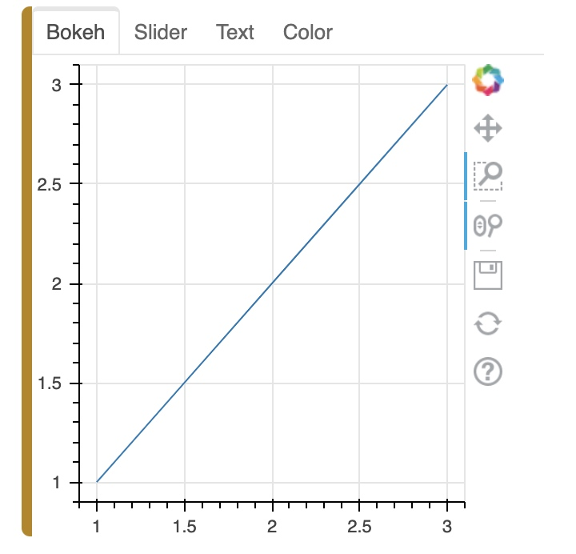
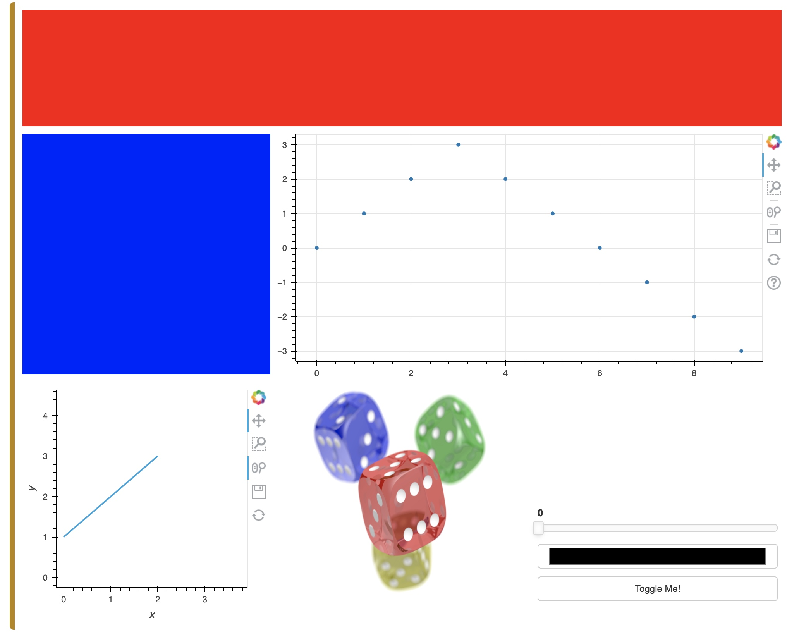

Pane objects allow wrapping external viewable items like Bokeh, Plotly, Vega, or HoloViews plots, so they can be embedded in a panel.
Widget objects provide controls that can trigger Python or JavaScript events.
Panel layout objects allow combining plots into a Row, Column, Tabs or a Grid.
To display any panel objects in a notebook environment ensure you load the extension first:
import panel as pn
pn.extension()
Note that to use certain components such as Vega, LaTeX, and Plotly plots in a notebook, the models must be loaded using the extension. E.g.:
pn.extension('vega', 'katex')
Parameterized Components
Class Level
pn.widgets.Select.sizing_mode = 'stretch_both'
or on each instance:
pn.widgets.Select(sizing_mode='stretch_both')
Panes
Pane objects can display and arrange plots, images, markup languages.
Explicitly Construct a Pane
pn.pane.Markdown('''
# H1
## H2
### H3
''')
Convenient helper function that will convert objects into a Pane or Panel
png = pn.panel('https://upload.wikimedia.org/wikipedia/commons/4/47/PNG_transparency_demonstration_1.png', width=500)
png
To see the type of the pane use the print function, which works with any Widget, Pane, or (perhaps most usefully) Panel:
print(png)
PNG(str, width=500)
Widgets
Widgets have name, value, and other parameters specific to each widget.
widget = pn.widgets.TextInput(name='A widget', value='A string')
widget
# In this way the widget values can easily be accessed and set:
widget.value = '3'
widget.width = 100
# As well as linked to other objects:
string = pn.pane.Str()
widget.jslink(string, value='object')
pn.Row(widget, string)
Panels
Panels allow arranging widget and pane objects into fixed-size or responsively resizing layouts, building simple apps or complex dashboards.
There are four main types of panels:
- Row: A Row arranges a list of components horizontally.
- Column: A Column arranges a list of components vertically.
- Tabs: A Tabs object lays out a list of components as selectable tabs.
- GridSpec: A GridSpec lays out components on a grid.
Row & Column
The Row, Column, and Tabs Panels all behave very similarly. All of them are list-like.
Row and Column can be initialized as empty or with the objects to be displayed as arguments. If each of the object(s) provided is not already a Widget, Pane, or Panel, the panel will internaly call the pn.panel function to convert it to a displayable representation (typically a Pane).
# To start with, we will declare a Column and populate it with a title and a widget:
column = pn.Column('# A title', pn.widgets.FloatSlider())
# Next we add another bit of markdown:
column.append('* Item 1\n* Item 2')
# Then we add a few more widgets:
column.extend([pn.widgets.TextInput(), pn.widgets.Checkbox(name='Tick this!')])
# and finally we change our mind and replace the Checkbox with a button:(title is also counted)
column[3] = pn.widgets.Button(name='Click here')
column
Tabs
from bokeh.plotting import figure
p1 = figure(width=300, height=300)
p1.line([1, 2, 3], [1, 2, 3])
tabs = pn.Tabs(p1)
# Add a tab
tabs.append(('Slider', pn.widgets.FloatSlider()))
# Add multiple tabs
tabs.extend([
('Text', pn.widgets.TextInput()),
('Color', pn.widgets.ColorPicker())
])
tabs
Append: add one tab.
Extend: add multiple tabs.

GridSpec
It is more like a 2D-array to arrange elements.
import holoviews as hv
import holoviews.plotting.bokeh
from bokeh.plotting import figure
fig = figure()
fig.scatter([0, 1, 2, 3, 4, 5, 6, 7, 8, 9], [0, 1, 2, 3, 2, 1, 0, -1, -2, -3])
gspec = pn.GridSpec(sizing_mode='stretch_both', max_height=800)
gspec[0, :3] = pn.Spacer(background='#FF0000')
gspec[1:3, 0] = pn.Spacer(background='#0000FF')
gspec[1:3, 1:3] = fig
gspec[3:5, 0] = hv.Curve([1, 2, 3])
gspec[3:5, 1] = 'https://upload.wikimedia.org/wikipedia/commons/4/47/PNG_transparency_demonstration_1.png'
gspec[4:5, 2] = pn.Column(
pn.widgets.FloatSlider(),
pn.widgets.ColorPicker(),
pn.widgets.Toggle(name='Toggle Me!'))
gspec
